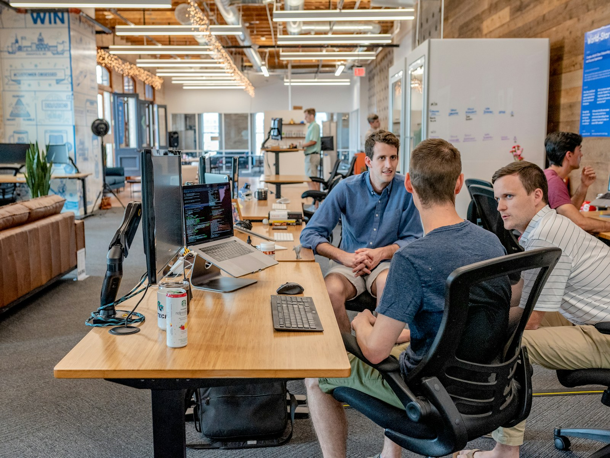

01 SALES SUPPORT
営業代行・営業責任者代行
ターゲット選定、新規顧客開拓、商談、提案、クロージングを支援します。営業責任者代行では、案件判断、営業会議、数字の管理、メンバー支援まで担います。
- 営業担当者を採用する前に活動を始めたい
- アポイント後の受注率を改善したい
- 営業部門全体を運営できる人材が不足している
SOLUTIONS
横須賀市を拠点に、営業の実行から戦略、KPI、利益管理、組織づくりまで伴走します。
YOKOSUKA / KANAGAWA
社内に営業責任者がいない、新規開拓が進まない、案件や数字が担当者に集中している。EM PLANNINGは、計画だけでなく実務に入り込み、営業活動を継続できる仕組みへ変えていきます。
横須賀・神奈川県内を中心に、訪問とオンラインを組み合わせて対応します。県外・全国の企業様もご相談いただけます。
SERVICE AREAS
現在の課題に合わせて、必要な領域を組み合わせます。

01 SALES SUPPORT
ターゲット選定、新規顧客開拓、商談、提案、クロージングを支援します。営業責任者代行では、案件判断、営業会議、数字の管理、メンバー支援まで担います。
02 STRATEGY
市場、顧客、自社の強みを整理し、重点顧客と訴求を設計します。売上・粗利から商談、提案、接触へ逆算し、顧客・案件・営業利益を改善できる管理方法を整えます。

03 DEVELOPMENT
顧客仮説、提供価値、価格、提案方法を整理し、実際の商談で市場の反応を検証します。営業資料、管理方法、人材育成まで社内に残る形で標準化します。
04 LOGISTICS / FC
新規荷主開拓、顧客・案件管理、運行条件と利益の確認、営業と配車・現場の連携を支援します。フランチャイズ事業の企画、運営、加盟店の営業支援にも対応します。
営業戦略設計は月額165,000円（税込）から、営業伴走支援は月額330,000円（税込）から、営業部門運営支援は月額550,000円（税込）からご案内しています。実際の料金は対象市場、商材、期間、稼働量、支援範囲を伺ったうえでお見積もりします。
株式会社EM PLANNING
〒238-0006 神奈川県横須賀市日の出町1丁目6 リアライズ横須賀2F
TEL：046-874-7258 MAIL：em.planning801@gmail.com
初回相談は無料です。まだ課題が言語化できていなくても構いません。